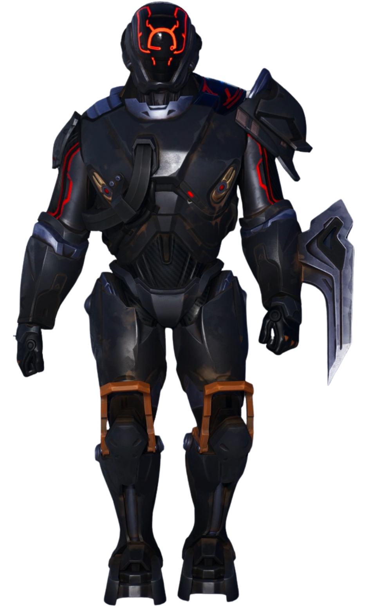

Le Scientifique
// Archives Biographiques
L'Ingénieur Cosmique
Membre éminent des mystérieux "Sept", Le Scientifique est l'esprit brillant et condescendant de l'organisation, reconnaissable à son armure lourde et sa visière numérique. Cet ingénieur chargé d'endiguer les menaces cosmiques fait une apparition inopinée à la fin du Tome 2, en pleine dislocation d'Astéria. Surpris par le Clan du Soleil dans le Temple Zéro alors qu'il installe froidement un dispositif sur l'orbe, il se montre méprisant envers ceux qu'il considère comme de simples amateurs. Face à l'apocalypse, il ordonne au groupe de s'écarter pour le laisser exécuter le plan ultime de sa faction : repousser l'Ultime Réalité et déclencher le colossal protocole "Bulle de Réalité" afin de sécuriser définitivement le Point Zéro contre toute nouvelle corruption.
// Variantes Visuelles
